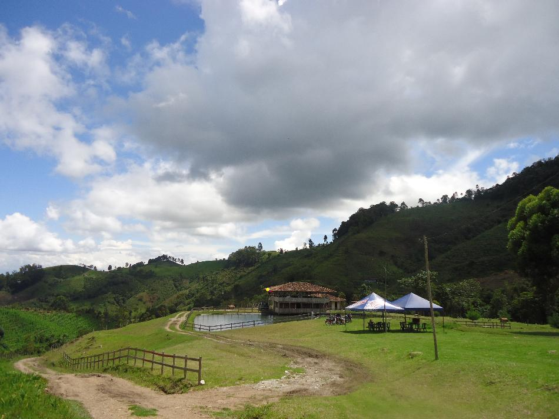
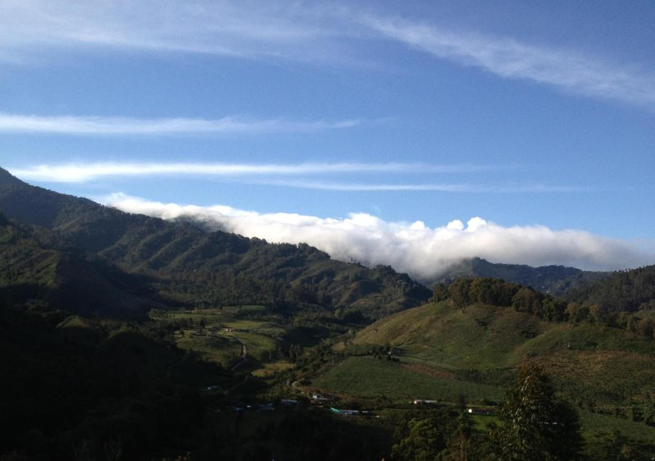

<div class="container-fluid fullContainer">
   <div class="row fullHeight">
      <div class="col-md-10 fullHeight ">
      	<div class="imgMainContainer">
      	    <div class="imgContainer animated">
      	      
      	    </div>
      	    <div class="imgContainer imgMain animated">
      	      
      	    </div>
      	    <div class="button-holder right-holder">

                <a data-move="next" href="#" onclick="imgMove2(this)"></a>
      	    </div>
      	    <div class="button-holder">
                <a data-move="previous" href="#" onclick="imgMove2(this)"></a>
      	    </div>
      	</div>
      </div>
      <div class="col-md-2 fullHeight ">
      	
         <h2>Caminatas</h2>
      	<p class="lead leadCenter">En un verdadero paraíso natural se convierten las caminatas

que se realizan por los diferentes senderos de la vereda y del 

Parque Natural Tatamá. Además contamos con guías para 

que la experiencia sea más segura e inolvidable. Este tiene 

un costo de $50.000 </p>
      </div>
   </div>
</div>